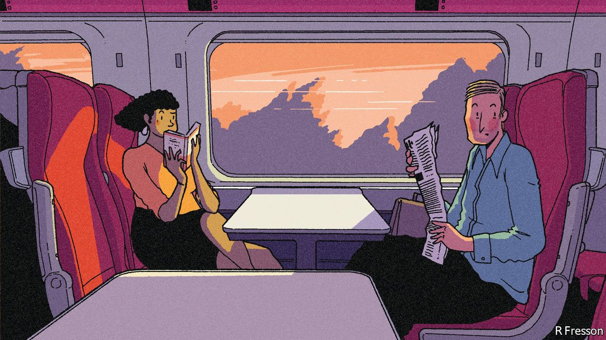

2021-07-28T02:07:23+00:00
Social skills
社交技能
社交技能
The vital art of talking to strangers
与陌生人交流的重要技艺
與陌生人交流的重要技藝
Three books explain why it matters—and can easily be lost
三本著作诠释其重要性以及为何容易丧失【《你好，陌生人》、《陌生人的力量》、《碎裂》书评】
三本著作詮釋其重要性以及為何容易喪失【《你好，陌生人》、《陌生人的力量》、《碎裂》書評】
ATTITUDES TO STRANGERS tend to follow a familiar pattern. Children are taught never to speak to unknown grown-ups, especially those regarded by their parents as untrustworthy. The onset of adolescence and young adulthood brings a bursting desire to interact with all sorts of people, particularly the kind who might not elicit family approval. Whether the resulting encounters are sexual or social, they confer a thrilling frisson of escape.
人们对陌生人的态度往往落入一套常见的模式。在孩童时被教导不要和不认识的大人说话，特别是那些被父母认为不值得信任的人。到了青春期和二十出头，又会产生与各种人交流的强烈愿望，特别是家人可能不认可的那种人。无论这会发展出性关系还是一般的社交关系，都会带来一种逃离的强烈兴奋感。
人們對陌生人的態度往往落入一套常見的模式。在孩童時被教導不要和不認識的大人說話，特別是那些被父母認為不值得信任的人。到了青春期和二十齣頭，又會產生與各種人交流的強烈願望，特別是家人可能不認可的那種人。無論這會發展出性關係還是一般的社交關係，都會帶來一種逃離的強烈興奮感。
Social circles generally narrow again as people find life-partners, form households and produce offspring of their own. Time becomes scarce; new friendships are often based on sharing the burden of child care. Some people never recover the youthful zest for unforeseen liaisons. Professional duties swell even as parental ones diminish, and the inclination sags. In old age, even if curiosity and charisma remain undimmed, frailty makes new serendipitous connections harder to establish.
随着人们找到终生伴侣、组建家庭、生儿育女，社交圈通常再度缩小。时间变得不够用了，这时建立的新友谊往往都是基于分担育儿负担。有些人再也没有重燃年轻时随性结交的那股劲头。在为人父母的责任逐渐减轻之时，工作负担又在加大，交朋友的意愿也随之下降。到了老年，即使好奇心和魅力不减，年老体衰还是让邂逅新朋友变得更不容易。
隨着人們找到終生伴侶、組建家庭、生兒育女，社交圈通常再度縮小。時間變得不夠用了，這時建立的新友誼往往都是基於分擔育兒負擔。有些人再也沒有重燃年輕時隨性結交的那股勁頭。在為人父母的責任逐漸減輕之時，工作負擔又在加大，交朋友的意願也隨之下降。到了老年，即使好奇心和魅力不減，年老體衰還是讓邂逅新朋友變得更不容易。
But that is not the whole story. In mid-life and beyond people can still experience the joy of a random meeting, however short, which somehow touches a nerve. That might involve nothing more than a smile, or a chance remark that hits an emotional spot; or it might be an unexpectedly deep conversation on a plane or train, a surge of mutual understanding that is life-affirming even if the interlocutor is never seen again. This aspect of the promise and peril of strangers has enticed storytellers—from the rapture of “Brief Encounter” and “Before Sunrise” to the ruin of “Strangers on a Train”. The knowledge that the exchange will be a one-off can permit a delicious, uninhibited frankness.
但这并非故事的全部。在中年甚至之后，人们仍能收获萍水相逢的喜悦，这些相遇无论多短暂，也会以某种方式触动人们的神经。可能只是一个微笑，或偶然间直抵心头的一句话，也可能是在飞机或火车上一次意外的深谈，即使此后再不相见，那一刻的意气相投也有振奋人心的作用。陌生人带来的这种希望与冒险让故事创作者着迷，比如电影《相见恨晚》（Brief Encounter）和《爱在黎明破晓前》（Before Sunrise）中的一见倾心，以及《火车怪客》（Strangers on a Train）中的灭顶之灾。知道自己经历的只是一期一会，会让人无拘无束地坦呈自我而感觉美妙。
但這並非故事的全部。在中年甚至之後，人們仍能收穫萍水相逢的喜悅，這些相遇無論多短暫，也會以某種方式觸動人們的神經。可能只是一個微笑，或偶然間直抵心頭的一句話，也可能是在飛機或火車上一次意外的深談，即使此後再不相見，那一刻的意氣相投也有振奮人心的作用。陌生人帶來的這種希望與冒險讓故事創作者着迷，比如電影《相見恨晚》（Brief Encounter）和《愛在黎明破曉前》（Before Sunrise）中的一見傾心，以及《火車怪客》（Strangers on a Train）中的滅頂之災。知道自己經歷的只是一期一會，會讓人無拘無束地坦呈自我而感覺美妙。
In the age of covid-19 and Zoom, the chronological pattern has been warped. Instead of their hazy possibilities and risks, strangers have assumed an all-too-literal role as a looming source of infection. During lockdowns they are officially to be avoided. Yet youngsters still long, dangerously, for the ecstasy of communion, not just with edgy individuals but anonymous crowds. People of all ages have come to miss the human stimulation of busy high streets or trains, or the comforting sense of fellowship in a cinema or theatre audience.
在新冠疫情和Zoom会议的时代，这套按时间发展的模式已被扭曲。陌生人不再意味着朦胧的可能性和风险，而是成了切实逼近的感染源。实施封锁期间，官方要求人们避免接触陌生人。不过，年轻人依然不顾危险，渴望与前卫人士乃至无名人群交流的狂喜。所有年龄段的人都开始怀念商业街或火车上的拥挤人群带来的新鲜感，或者是在电影院、剧院里有其他观众相伴的慰藉。
在新冠疫情和Zoom會議的時代，這套按時間發展的模式已被扭曲。陌生人不再意味着朦朧的可能性和風險，而是成了切實逼近的感染源。實施封鎖期間，官方要求人們避免接觸陌生人。不過，年輕人依然不顧危險，渴望與前衛人士乃至無名人群交流的狂喜。所有年齡段的人都開始懷念商業街或火車上的擁擠人群帶來的新鮮感，或者是在電影院、劇院里有其他觀眾相伴的慰藉。
So this is an apt moment for three books about meeting strangers. Will Buckingham has written a moving memoir of finding solace, after the death of his life-partner, in travelling and talking in lands such as Myanmar that are culturally distant from his native England. Joe Keohane, an American journalist, argues that communicating empathetically with strangers is vital and potentially life-changing. Jon Yates, who runs a youth charity based in London, frets that deep fissures in Western societies are making it impossible for people to reach, even casually, between classes, religions, ethnicities and generations.
三本关于遇见陌生人的新书应运而生。威尔·巴金汉姆（Will Buckingham）书写了一部感人的自传，讲述了伴侣去世后，他在缅甸等文化上与家乡英国相去甚远的地方旅行和交谈并从中找到慰藉的经历。美国记者乔·基奥恩（Joe Keohane）认为，带着同理心与陌生人交流至关重要，可能带来改变一生的影响。在伦敦经营一家青少年慈善机构的乔恩·耶茨（Jon Yates）担心，西方社会深刻的裂痕正在导致人们无法跨阶级、宗教、种族和世代往来，哪怕只是很随意的接触。
三本關於遇見陌生人的新書應運而生。威爾·巴金漢姆（Will Buckingham）書寫了一部感人的自傳，講述了伴侶去世後，他在緬甸等文化上與家鄉英國相去甚遠的地方旅行和交談並從中找到慰藉的經歷。美國記者喬·基奧恩（Joe Keohane）認為，帶着同理心與陌生人交流至關重要，可能帶來改變一生的影響。在倫敦經營一家青少年慈善機構的喬恩·耶茨（Jon Yates）擔心，西方社會深刻的裂痕正在導致人們無法跨階級、宗教、種族和世代往來，哪怕只是很隨意的接觸。
All three authors make sweeping generalisations about the evolution of human society, from hunter-gatherers to the age of Homer and beyond. But they are more interesting when they reflect, using personal experience or scientific research, on how people live and communicate now. In different ways, they all make two separate but related points. First, interacting meaningfully with a new person can bring huge rewards—but it is a skill that must be cultivated and can easily be lost. Second, the self-segregation of modern Western societies means that, for many people, conversing with some fellow citizens seems pointless, undesirable or outlandish. The second problem exacerbates the first: if you consider others beyond the pale, why make the effort to get to know them?
三位作者都对人类社会从狩猎采集到荷马时代及以后的演进做了笼统的概括。但书中更有趣的部分是他们通过个人经历或科学研究来反思人们今天如何生活和交流。他们殊途同归地提出了两个独立又有关联的观点。首先，与陌生人的有意义的互动可以带来巨大的回报，但这是一种必须有意识地培养而又很容易丧失的技能。第二，现代西方社会的自我隔离意味着，对许多人来说，与社会上其他人对话无意义、不可取甚或古怪。第二个问题加剧了第一个问题，因为假如你认为其他人和自己格格不入，那何必费劲去了解他们？
三位作者都對人類社會從狩獵採集到荷馬時代及以後的演進做了籠統的概括。但書中更有趣的部分是他們通過個人經歷或科學研究來反思人們今天如何生活和交流。他們殊途同歸地提出了兩個獨立又有關聯的觀點。首先，與陌生人的有意義的互動可以帶來巨大的回報，但這是一種必須有意識地培養而又很容易喪失的技能。第二，現代西方社會的自我隔離意味着，對許多人來說，與社會上其他人對話無意義、不可取甚或古怪。第二個問題加劇了第一個問題，因為假如你認為其他人和自己格格不入，那何必費勁去了解他們？
As both Mr Keohane and Mr Yates emphasise, in Britain and America political divisions have ossified into tribal ones. Supporters and opponents of Brexit live in discrete clusters; Republicans and Democrats see each other as bad people, not fellow Americans whose opinions happen to differ. These opposing sides have become strangers to one another. Mr Buckingham focuses on the pleasures and pitfalls of encounters in remote places where the stakes are lower because the acquaintanceships are bound to be temporary—in a holiday flat-share in Helsinki or while travelling through the Balkans. But, like the other two, he notes that wariness of unfamiliar people is neither new nor insuperable.
正如基奥恩和耶茨所强调的，在英国和美国，政治分歧已经僵化到“部落化”。英国脱欧的支持者和反对者生活在相互隔离的群体中；共和党人和民主党人都视对方为坏人，而非只是恰好观点不同的同胞。这些对立双方形同陌路。巴金汉姆则专注探讨在遥远地域偶遇的乐趣和陷阱，在这种情况下没有多少利害关系，因为这种相识必然是短暂的——比如在赫尔辛基的共享度假公寓或在巴尔干半岛的旅行。但是，和其他两位作者一样，他指出，对陌生人的戒心既不新鲜，也非无法克服。
正如基奧恩和耶茨所強調的，在英國和美國，政治分歧已經僵化到“部落化”。英國脫歐的支持者和反對者生活在相互隔離的群體中；共和黨人和民主黨人都視對方為壞人，而非只是恰好觀點不同的同胞。這些對立雙方形同陌路。巴金漢姆則專註探討在遙遠地域偶遇的樂趣和陷阱，在這種情況下沒有多少利害關係，因為這種相識必然是短暫的——比如在赫爾辛基的共享度假公寓或在巴爾幹半島的旅行。但是，和其他兩位作者一樣，他指出，對陌生人的戒心既不新鮮，也非無法克服。
Faces look ugly when you’re alone
当你孤独无依他们面目狰狞
當你孤獨無依他們面目猙獰
Mr Keohane and Mr Yates offer tips on befriending strangers. Mr Keohane describes exercises in which groups of Republicans and Democrats were, with great difficulty, coaxed to overcome stereotypes and see one another as rounded individuals. They were trained to ask each other good questions and avoid name-calling. Mr Yates discusses the case for a kind of national social service that would encourage youngsters to mix with other groups and generations. Both have homely micro-solutions that readers can apply in daily relations—assume the best of others, remember that most have stories they are longing to tell, react philosophically when a friendly approach is rebuffed.
基奥恩和耶茨提供了一些结交陌生人的技巧。基奥恩以美国共和党和民主党群体的沟通训练为例，展示了如何异常艰难地引导他们克服思维定势，视彼此为具有多面性的人。训练中，他们要学会向对方提出有意义的问题，避免诋毁和谩骂。耶茨则探讨了推出一种国家层面的社会服务，以鼓励年轻人融入其他群体和世代。这两本书都提出了一些简单易懂的微观解决方案，供读者运用于日常人际关系——把别人往好处想；记得大多数人都有渴望倾诉的故事；当友善接触被拒绝时，要泰然处之。
基奧恩和耶茨提供了一些結交陌生人的技巧。基奧恩以美國共和黨和民主黨群體的溝通訓練為例，展示了如何異常艱難地引導他們克服思維定勢，視彼此為具有多面性的人。訓練中，他們要學會向對方提出有意義的問題，避免詆毀和謾罵。耶茨則探討了推出一種國家層面的社會服務，以鼓勵年輕人融入其他群體和世代。這兩本書都提出了一些簡單易懂的微觀解決方案，供讀者運用於日常人際關係——把別人往好處想；記得大多數人都有渴望傾訴的故事；當友善接觸被拒絕時，要泰然處之。
A telling point that none of the books captures is a paradoxical one: some of the most sophisticated forms of interaction between strangers occur in societies that are chronically divided. Think, for example, of rural Northern Ireland, or of parts of the former Ottoman Empire, such as Lebanon, where residents have lived in separate communal silos. In ways impenetrable to outsiders, the denizens of such places develop perfect antennae for the affiliation of a stranger and adjust their remarks accordingly. The ensuing exchanges occur within well-understood parameters—including a sense that social categories are resilient and pleasantries will not change them. But tact allows people from antagonistic camps to have amicable encounters and transactions.
有一个看似矛盾但又特别能说明问题的关键点，这三本书都没有提及：陌生人之间一些形式最复杂的互动发生在长期分裂的社会中。想想北爱尔兰的农村地区，或者前奥斯曼帝国的部分地区（如黎巴嫩），那里的居民一直生活在不相往来的孤岛式社区内。这些地方的居民以局外人看不透的方式发展出了完善的直觉，可参透陌生人的来历，并相应地调整自己的言谈。随后发生的交流有着清楚明白的界限——包括意识到社会类别群体是有适应力的，他们不会因客套而改变。但通过运用技巧，来自对立阵营的人也能友好地接触和交易。
有一個看似矛盾但又特別能說明問題的關鍵點，這三本書都沒有提及：陌生人之間一些形式最複雜的互動發生在長期分裂的社會中。想想北愛爾蘭的農村地區，或者前奧斯曼帝國的部分地區（如黎巴嫩），那裡的居民一直生活在不相往來的孤島式社區內。這些地方的居民以局外人看不透的方式發展出了完善的直覺，可參透陌生人的來歷，並相應地調整自己的言談。隨後發生的交流有着清楚明白的界限——包括意識到社會類別群體是有適應力的，他們不會因客套而改變。但通過運用技巧，來自對立陣營的人也能友好地接觸和交易。
All three authors are inclined to overstate the ability of brief interactions to stave off conflict. Yet at least this much is true: a capacity to engage with new people in civilised, humane and meaningful ways is a necessary condition for social peace, even if it is not a sufficient one. That points up a half-hidden cost of covid-19. Children educated on screen; teenagers bouncing off the walls; adults working at home; lonely pensioners: more or less everyone’s social skills have been atrophying, with consequences not only for individuals but, perhaps, for the fabric of society.
三位作者都倾向于夸大短暂互动在避免冲突上的作用。但至少有一点是对的：以文明、人道和有意义的方式与陌生人接触的能力即便不是社会和平的充分条件，也是必要条件。这就突显了疫情的一个半隐藏成本。在屏幕上接受教育的儿童、精力无处释放的青少年、在家工作的成年人、孤独的退休人士——差不多所有人的社交技能都在退化，这影响的不仅是个人，也许还有社会结构。
三位作者都傾向於誇大短暫互動在避免衝突上的作用。但至少有一點是對的：以文明、人道和有意義的方式與陌生人接觸的能力即便不是社會和平的充分條件，也是必要條件。這就突顯了疫情的一個半隱藏成本。在屏幕上接受教育的兒童、精力無處釋放的青少年、在家工作的成年人、孤獨的退休人士——差不多所有人的社交技能都在退化，這影響的不僅是個人，也許還有社會結構。
As lockdowns lift, people are now stumbling back into a world of accidental collisions, some eagerly, some queasily, most with an odd sensation of novelty after a year of hibernation. The lesson of these books is that the easing of restrictions is not just a coveted opportunity to reconnect with those you love and resemble. It also restores a freedom, long taken for granted even if little used, to come to know the profoundly different. ■
随着封锁解除，人们正磕磕绊绊地重回那个充满意外碰撞的世界。对此有人急切，有人不安，但困居一年后，大多数人都带着一种奇怪的新鲜感。这三本书教给我们的是，社交限制的放宽不仅给了人们渴求的机会与所爱之人或同道中人重新连结，也让他们重获自由——一种一直被视为理所当然却又很少行使的自由——去了解那些与自己志趣迥乎不同的人。
隨着封鎖解除，人們正磕磕絆絆地重回那個充滿意外碰撞的世界。對此有人急切，有人不安，但困居一年後，大多數人都帶着一種奇怪的新鮮感。這三本書教給我們的是，社交限制的放寬不僅給了人們渴求的機會與所愛之人或同道中人重新連結，也讓他們重獲自由——一種一直被視為理所當然卻又很少行使的自由——去了解那些與自己志趣迥乎不同的人。